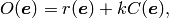
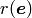
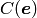
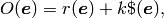
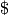
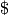

Experiment Design Algorithms¶
Introduction¶
The information gathered by updates of a posterior distribution, such as the updates generated by the SMC approximation, can be used to inform the choice of future experiments. The ExperimentDesigner encapsulates and automates this process by designing experiments that minimize an objective function

where  is the Bayes risk (see [GFWC12]), 
is a cost function describing the cost associated with each experiment and where
 is a parameter describing how much we are willing to pay for
reductions in risk. In QInfer, the cost function is specified as the
experiment_cost() method of
the Simulatable class under study.
is a parameter describing how much we are willing to pay for
reductions in risk. In QInfer, the cost function is specified as the
experiment_cost() method of
the Simulatable class under study.
ExperimentDesigner - Greedy Risk Minimization Algorithm¶
Class Reference¶
- class qinfer.expdesign.ExperimentDesigner(updater, opt_algo=1)[source]¶
Bases: object
Designs new experiments using the current best information provided by a Bayesian updater.
Parameters: - updater (qinfer.smc.SMCUpdater) – A Bayesian updater to design experiments for.
- opt_algo (OptimizationAlgorithms) – Algorithm to be used to perform local optimization.
- new_exp()[source]¶
Resets this ExperimentDesigner instance and prepares for designing the next experiment.
- design_expparams_field(guess, field, cost_scale_k=1.0, disp=False, maxiter=None, maxfun=None, store_guess=False, grad_h=None, cost_mult=False)[source]¶
Designs a new experiment by varying a single field of a shape (1,) record array and minimizing the objective function

where
 is the Bayes risk as calculated by the updater, and
where  is the cost function specified by the model. Here,
is a parameter specified to relate the units of the risk and
the cost. See Experiment Design Algorithms for more details.
is the Bayes risk as calculated by the updater, and
where  is the cost function specified by the model. Here,
is a parameter specified to relate the units of the risk and
the cost. See Experiment Design Algorithms for more details.Parameters: - guess (Instance of Heuristic, callable or ndarray of dtype expparams_dtype) – Either a record array with a single guess, or a callable function that generates guesses.
- field (str) – The name of the expparams field to be optimized. All other fields of guess will be held constant.
- cost_scale_k (float) – A scale parameter relating the
Bayes risk to the experiment cost.
See Experiment Design Algorithms.
- disp (bool) – If True, the optimization will print additional information as it proceeds.
- maxiter (int) – For those optimization algorithms which support it (currently, only CG and NELDER_MEAD), limits the number of optimization iterations used for each guess.
- maxfun (int) – For those optimization algorithms which support it (currently, only NCG and NELDER_MEAD), limits the number of objective calls that can be made.
- store_guess (bool) – If True, will compare the outcome of this guess to previous guesses and then either store the optimization of this experiment, or the previous best-known experiment design.
- grad_h (float) – Step size to use in estimating gradients. Used only if opt_algo is NCG.
Returns: An array representing the best experiment design found so far for the current experiment.